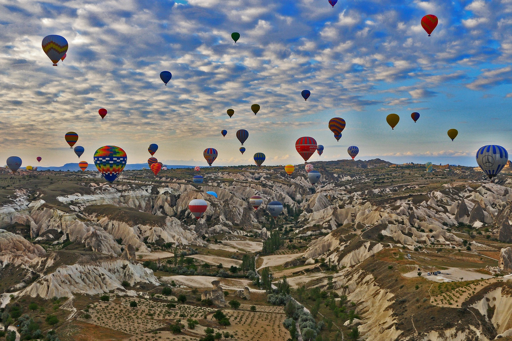

3NOV
繽紛熱氣球點綴土耳其卡帕多奇亞天空
CATEOGRY:土耳其精選旅遊
土耳其的「卡帕多西亞」地區是一個熱門的旅遊目的地，因其有許多獨特的地理、歷史和文化特色區域，一直以來受到國際旅人的喜愛，其中許多人對卡帕多西亞最深刻的印記，莫過於特殊的地貌以及為數眾多自由飛的熱氣球，造就了一種奇特又極夢幻景象，讓人不對土耳其以及卡帕多西亞有極深刻的印象。
卡帕多奇亞以令人嘆為觀止的自然美景和歷史名勝吸引著遊客，是土耳其最具吸引力的地區之一。這個童話王國每個季節都有獨特的體驗，如：洞穴酒店、色彩繽紛的熱氣球、奇特的文化景觀，和有千年歷史的葡萄種植及陶器作坊遺址。為此，為遊客搜羅此生必去卡帕多奇亞的五大理由。.

卡帕多奇亞是重要遺跡的家園，其歷史可以追溯到公元前二千年的赫梯人時代。
地下城是卡帕多奇亞之旅中最壯觀景點之一，這些城市起源於公元七世紀和八世紀，也被早期基督徒用來公開敬拜。卡伊馬克裡（Kaymaklı），代林庫尤（Derinkuyu），科納克（Özkonak）和馬澤（Mazı）地下城存續了數十年，通過隧道，房間，穀倉，酒窖，餐廳，教堂和糧庫可深入瞭解當地人的地下生活場景。 Üzengi河沿岸的Gomeda 山谷有洞穴教堂，鴿子窩，藤蔓和地下城市。 三個美女（Three Beauties）是指三個相鄰的仙女煙囪。位於奧塔西薩城堡（Ortahisar Castle）和於爾居普（Ürgüp）地區，被稱為「父親，母親和孩子」的仙女煙囪也是卡帕多奇亞必看的景點。